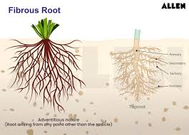

flowchart LR
A[Sunlight] --> C{Photosynthesis, Chlorophyll}
D[Carbon dioxide 6CO2] --> C
W[Water 6H20] --> C
C --> B[Sugar C6H12O6 + Oxygen 6O2]
Sustainable Forest Environment (SFE)
Lecture 3: Forest Ecosystems (Last update: 29 April 2025)
Introduction
The development of a single tree progresses from
- formation of a seed
- germination of seed
- transition into a seedling
- growth into a mature tree
- eventual production of flowers and seeds


Forest stories come from tree (mainly)
The stories of forests assemble from the stories of the life cycles of individual trees, along with the stories of understory vegetation, animals, and microbes.

Forest
Seeds of tree
Definition
A seed is a plant structure containing an embryo and stored nutrients in a protective coat called a testa.
- In seed plants (spermatophytes), seed formation is the part of the process of reproduction.
- Other plants such as ferns, mosses and liverworts, do not have seeds and use water-dependent means to propagate themselves.
- The size of seeds varies significantly.

Seeds of tree
Seedlings that develop from large seeds (such as walnuts and acorns) have a great advantage over seedlings endowed with very, very tiny seeds (such as cottonwoods and willows).


Plant leaf structure (medium scale features)

Medium-scale features: Leaves are normally extensively vascularized and typically have networks of vascular bundles containing xylem, which supplies water for photosynthesis, and phloem, which transports the sugars produced by photosynthesis. Many leaves are covered in trichomes (small hairs) which have diverse structures and functions.
Plant leaf structure (small scale features)

Small-scale features: (a) The epidermis, which covers the upper and lower surfaces, (b) The mesophyll tissue, which consists of photosynthetic cells rich in chloroplasts. (also called chlorenchyma), (c) The arrangement of veins (the vascular tissue)
Leaf epidermis

SEM image of a leaf epidermis
Colors of leaves
Pigments
Pigments are organic compounds that absorb light at specific wavelengths and reflect or transmit light at other wavelengths. The color of a pigment is determined by the wavelengths of light it absorbs and reflects.
Why are leaves green?
The sunlight has a spectrum of colors that combine to make white light, and leaves absorb red, yellow, and blue light with green light reflecting from the leaves.

Colors of leaves
Sunlight
- The sunlight has a spectrum of colors that combine to make white light.
- Actually, light doesn’t really come in colors.
- Light (and other electromagnetic radiation) has wavelengths (or the inverse, frequencies) of oscillations.
- Some chemicals effectively absorb only certain wavelengths, and that’s the case for receptors in our eyes.
- We have receptors that are activated strongly by light with wavelengths near 440, 540, and 580 nm.
- The electrical signals sent from our eyes are interpreted as colors in our brains, with millions of variations created by combining the intensities sensed in these bands of wavelengths.
- The wavelengths themselves possess no property of color. Without eyes, the world has no color.
Chlorophyll
- Molecules of chlorophyll do not absorb much of the green light
- Our eyes interpret leaves as being green because green leaves absorb about 95% of the other visible wavelengths, but a bit less of the green light, so our eyes perceive more photons with a green wavelength than any others.


Carotenoids
- These pigments are responsible for the yellow, orange, and red colors of many fruits and vegetables.
- Carotenoids give the color to carrots, pumpkins, corn, and tomatoes.


Anthocyanins
- Anthocyanins are pigments that can appear red, purple, or blue depending on the pH.
- They are produced in the leaves of some plants in response to stress, such as high light intensity or low temperatures.


Photosynthesis
- The growth of forests relates in part to the supply of water, because the uptake of carbon dioxide (CO2) from the atmosphere can be accomplished only by exposing the moist interiors of leaves to the dry air.
- For each CO2 molecule that diffuses from dry air into the moist interior of a leaf, something like 200–500 molecules of water escape into the atmosphere.
- When water supplies are low, trees close the pores (stoma = mouth, stomata or stomates for plural) on leaves, minimizing water loss and unfortunately preventing uptake of CO2.


Root system

Primary and secondary roots in a cotton plant
Definition
In vascular plants, the roots are the organs of a plant that are modified to provide anchorage for the plant and take in water and nutrients into the plant body, which allows plants to grow taller and faster
Root system
There are two main types of root systems:
- Taproot system: A single, thick primary root (the taproot) that grows deep into the soil, with smaller secondary roots branching off from it. This type of root system is common in dicotyledonous plants (e.g., carrots, dandelions).
- Fibrous root system: A network of thin, branching roots that spread out horizontally near the soil surface. This type of root system is common in monocotyledonous plants (e.g., grasses, wheat).



{kind=link}